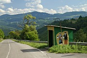
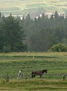
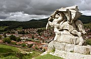
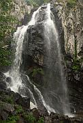

Disclaimer: These pages are not actively maintained, and some of the practical information on the site is out of date. I am working on a new version of the site that will focus more on my photos and memories of travel in Southeast Europe, and less on practical details that too easily become obsolete. In the meantime, please treat the information here with caution.
Around Sofia
Sofia's excellent transport connections make it a good base for exploring western Bulgaria. Some suggested excursions are described here. It is also possible to visit Plovdiv as a day trip, although there is enough to see there to make it worth a longer visit.
Iskâr Valley, from Lakatnishki Skali

Bus stop near Milanovo
Lakatnik and The Iskâr Gorge
This excursion to the western Balkan Mountains (Stara Planina) is one of my favourite day trips from Sofia, but seems to be little known by foreigners. As you get off the train from Sofia at the Gara Lakatnik halt, directly in front of you is the Lakatnishki Skali, a formidable cliff of white rock. Cross the river using either the pedestrian bridge below the station or another bridge further downstream (i.e. heading away from Sofia). Near the second bridge you'll find a cafe, a board displaying a map of the region, and the start of a trail marked with faded blue blazes. The path leads steadily uphill to the top of the Skali - it's an easier walk than you might think when viewing the cliffs from below. After about an hour you should be rewarded with a breathtaking view of the Iskâr Gorge, quite possibly with a train chugging along the valley floor.
Ranged along the top of the cliff are an ugly Communist-era monument, a golden cross, and a precariously perched climber's hut known as the Eagle's Nest. If you have time you can continue walking through a gentle pastoral landscape that seems to belong in a different world from the crags you have just climbed. If you walk away from the valley you will probably reach the village of Milanovo. Unless you fancy an extended trek north into the Vrachanski Balkan range, you can either return to the valley by the paved road or retrace your steps via the cliffs.
Practicalities
There are about 15 trains daily to Lakatnik (1-1.5 hours). Trains continue through the Iskâr Gorge to Mezdra - see the article Scenic train journeys in the Balkans. Gara Lakatnik has few facilities, so bring provisions with you. It can be more difficult to find hiking maps of this area than of Rila or Pirin, but thanks to Michael Rosemann several useful maps are available online.
Vratsa
Vratsata Gorge
The town of Vratsa (or Vraca) doesn't make a good first impression, as it is surrounded by factories and peeling tower blocks. The centre is more pleasant, but the real reason for coming here is to see the Vratsata Gorge. The crags that guard the entrance to the gorge loom over the main square. From the square a set of steps leads to a prominent yellow-painted restaurant; further steps bring you to a small peak slightly separated from the main massif (about one hour from the centre). From here there is a wonderful 360 degree view of the gorge, a slim but very tall waterfall plunging from a high cliff, lots of goats, the Danube plain, and Vratsa itself. Admittedly the view might be even better without the last one. Bad weather prevented me from continuing into the gorge, but it's certainly possible; a fuller exploration would require staying overnight in Vratsa.
Practicalities
There are frequent buses to Vratsa from Sofia's Central Bus Station, taking about two hours. There are also five direct trains. It's worthwhile taking the train at least in one direction as it goes through the Iskâr Gorge, a much more scenic route than the main road.

Koprivshtitsa

Near Koprivshtitsa

Benkovski Monument
Koprivshtitsa
If you spend some time travelling around Bulgaria you are sure to see many examples of nineteenth century domestic architecture in the National Revival style. In few places are these buildings grouped together as attractively as in Koprivshitsa. The surrounding Sredna Gora hills enhance the appeal of this small town, which is also famous (at least to Bulgarians) for its role in the 1876 Uprising.
It's an enjoyable experience to wander around the old town, taking in the distinctive mixture of overhanging upper storeys, brightly painted facades, and high stone walls. Several of the houses are open to visitors. The Lyutov house, for example, features a ceiling with paintings of the exotic cities visited by its yoghurt-baron owner. On the other side of the river, steps lead up to a statue of the revolutionary Benkovski, his horse apparently poised to leap right over the town. The mounted warrior with a cloak thrown over his shoulder is probably intended to evoke the Thracian Rider, the enigmatic figure preserved in stone in every self-respecting Bulgarian museum.
You might also consider a walk in the surrounding hills - Koprivshtitsa is over 1000m above sea level, so you don't have to climb very much for a view. Dirt tracks to the west of the town lead past fields ploughed by horses to a plateau strewn with wild flowers.
Some guidebooks suggest that Koprivshtitsa is a bit of a tourist trap. When I visited one Monday in June I didn't see anyone else who looked like a tourist, Bulgarian or foreign. Presumably it only gets busy at weekends and in July/August.
Practicalities
Koprivshtitsa train halt is served by four slow trains (2.5 hours) and one fast train (1.5 hours) daily - the latter is particularly useful for a day trip as it leaves Sofia in the morning. Minibuses carry passengers the remaining 12km from the halt to the town. There are also four direct buses or minibuses from Sofia. Train, bus, and minibus schedules are posted in the window of Koprivshtitsa's small bus station.
The various house-museums sell a ticket valid for all the other museums in town. Koprivshtitsa has quite a few accommodation options so it doesn't have to be seen as a day trip from Sofia. Onward public transport options are quite limited, especially heading south.
View from Vitosha

Boyana Waterfall
Mount Vitosha
Vitosha is one of Sofia's greatest assets, visible from almost everywhere in the city. It's essentially a big block of rock with few distinguishing features, and far from being Bulgaria's most spectacular mountain. But if you are spending some time in Sofia it's well worth a visit. Just a few minutes of walking can take you from the noise of traffic to the noise of the streams that tumble down Vitosha's forested northern slope.
Despite its almost suburban status, Vitosha is a serious mountain and offers a variety of walking routes, from short strolls to long treks. The obvious point to aim for is Cherni Vrah, the highest point of the massif. There are several possible approaches; the western path takes you through varied scenery and skirts an area of protected bog. Other targets are the stone rivers (huge 'streams' of boulders) near Zlatni Mostove, and the impressive Boyana Waterfall, directly uphill from Boyana Church.
Practicalities
There are a number of ways to reach Vitosha by public transport. Start by catching tram #9 from the centre to its terminus in the suburb of Hladilnika. Just beyond the tram stop is a small bus station from which various buses depart for Aleko, Dragalevtsi, and Boyana. It's possible to start walking from Dragelevtsi or Boyana, but Vitosha's northern slope is deceptively steep and you'll have to spend quite a while slogging uphill through forest with few views. Getting a bus to the mountain resort of Aleko saves you the trouble, and gives you the more attractive option of walking down to Boyana via the Boyana Waterfall. The chairlift from Dragalevtsi is also a good option provided it is operating - the chances are better at weekends.
Hiking maps of Vitosha are easily available from street stalls around Sofia - it's a good idea to bring one, as trail markings on some parts of Vitosha are poorly maintained. A street map of the city with local transport routes may also come in handy. There are plenty of places to eat scattered around Vitosha, including a hut at the top of Cherni Vrah.
In Julian Barnes' novel The Porcupine, the dictator Petkanov likes to tell inspirational stories about his memories of youthful hikes on 'Rykosha Mountain': "The ground underfoot was rough, with many boulders, and the track was not always clear, and several times we had to cross the river of stones. It's some ... geological thing, I don't know the name for it ... all of a sudden, we came out of the cloud ... we all burst into 'Stepping the Red Pathway' and sang ourselves to the top of the mountain".
Find out more
More photos of Koprivshtitsa and the Balkan Mountains in my Bulgaria Galleries